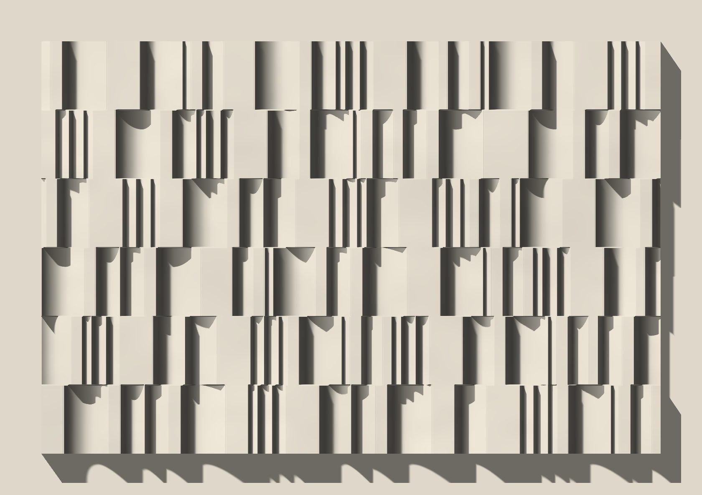
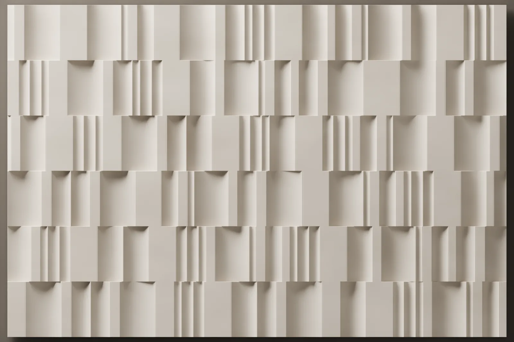
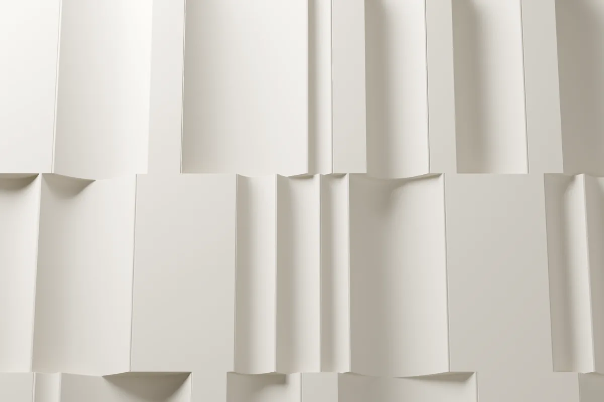
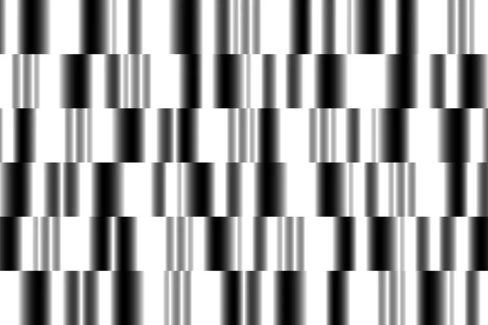

Fugato
Oluklar ve düz bantlardan bir profil çizdik ve onu iki kalıba böldük. 600 × 400 mm’lik plakalar sıra sıra, her sırada kaydırılarak dizilir; her plaka iki yönde de takılabildiği için aynı profil duvarda hiç aynı sırayla tekrar etmez.




- Ölçü
- 600 × 400 mm (plaka)
- Rölyef
- 40 mm
- Kurgu
- İki kalıp, kaydırmalı sıralar
- Malzeme
- Lumina PMAG™ (polimer modifiye kompozit alçı)
- Yüzey
- Boyaya hazır ya da artizan finish ile
- Montaj
- Polimer yapıştırıcı ve alt taşıyıcıyla
- Teslim
- Sözleşme ve peşinattan sonra 4 hafta (50 m²’ye kadar), Sapanca’da fabrika teslimi (EXW)
- Minimum sipariş
- 7,5 m²
Desen
Füg, bir ezginin farklı seslerde, farklı anlarda yeniden girdiği bir yazım biçimidir. Fugato’da ezgi bir profildir; dikey oluklarla aralarındaki düz bantlardan oluşur. Profil iki kalıba bölünmüştür ve her kalıp, oluklarla bantları farklı genişliklerde taşır.
Plakalar dizilirken her biri olduğu gibi ya da 180 derece çevrilerek takılabilir. Böylece iki kalıptan dört farklı plaka çıkar ve duvarda aynı dizi kolay kolay yinelenmez.
Işıkta okunuşu
Sayfanın başındaki görüntüde ışığı bilgisayarda imleciniz, telefonda sayfayı kaydırmanız yönlendirir. Oluklar 40 mm derinliğe iner; ışık yandan geldiğinde her oluğun bir kenarı uzun, net bir gölge düşürür ve duvar dikey çizgilerden bir partisyon gibi okunur. Işık dikleştikçe gölgeler kısalır, oluklar yumuşak bir kıvrıma döner.
Duvarda
Fugato 600 × 400 mm’lik plakalarla, 400 mm yüksekliğinde sıralar halinde kurulur. Her sıra bir öncekine göre kaydırılır, en kısa kenar parçası 90 mm’nin altına düşmez. Plaka uçları aynı düz sırtta biter; bu yüzden her plaka komşusuyla düz bir yüzeyde, alın alına buluşur. Tavana ulaşan son sıra yerinde kesilir; kaydırmaların ve kesimlerin yeri yerleşim çiziminde belirlenir.

Nerede kullanılır
Tavana kadar çıkan ve ışığı yandan alan bir duvar, Fugato’nun en güçlü okunduğu yerdir. Plakalar 400 mm yüksekliğinde, kaydırmalı sıralarla yükselir. Oluklar derin olduğu için yalama ışıkta her oluk uzun, net bir gölge düşürür ve duvar dikey gölge çizgileri olarak okunur. Işık dikleştikçe gölgeler kısalır, oluklar yumuşak bir kıvrıma döner. Parçalar boyaya hazır ya da artizan finish ile teslim edilir; boyaya hazır yüzey, yerinde mekânın rengine boyanabilir.
Sık sorulan sorular
Fugato plakalarının ölçüsü nedir, nasıl dizilir?
Fugato 600 × 400 mm’lik plakalarla, 400 mm yüksekliğinde sıralar halinde kurulur. Profil iki kalıba bölünmüştür; her plaka olduğu gibi ya da 180 derece çevrilerek takılabildiği için iki kalıptan dört farklı plaka çıkar. Her sıra bir öncekine göre kaydırılır, en kısa kenar parçası 90 mm’nin altına düşmez ve tavana ulaşan son sıra yerinde kesilir. Kaydırmaların ve kesimlerin yeri yerleşim çiziminde belirlenir.
Fugato’nun rölyefi ne kadar derin?
Oluklar 40 mm derinliğe iner. Plaka uçları aynı düz sırtta biter, bu yüzden her plaka komşusuyla düz bir yüzeyde, alın alına buluşur.
Fugato ne kadar sürede teslim edilir, duvara nasıl sabitlenir?
Teslim süresi, 50 m²’ye kadar olan siparişlerde sözleşme ve peşinattan sonra 4 haftadır; daha büyük siparişlerde tarih teklifte belirtilir. Teslim şekli Sapanca’da fabrika teslimidir (EXW). Parçalar Lumina PMAG™ — Polimer Modifiye Kompozit Alçı ile elde dökülür ve duvara polimer yapıştırıcıyla, metal dikme ve alçıpan duvarlarda ise ray sistemiyle sabitlenir. Bir kolonu saran, köşeyi dönen ya da kavisli bir duvarı izleyen parçalar ise aynı motifle Özel Üretim olarak dökülür; böyle bir duvar Özel Üretim takvimini izler. Minimum sipariş 7,5 m²’dir. Kalıp siparişinizle hazırlanır; dökümden önce ana modeli siz onaylarsınız; ikisi de 4 haftaya dahildir. En alt sıra sabit bir alt taşıyıcıya oturur, üst sıralar birbirinin üzerinde durur; montajdan önce duvar yüzeyi kontrol edilir.
Bu tasarımın duvarınızda nasıl yerleşeceğini görmek için duvar ölçülerinizi iletin.
Kolon yüzleri ve dış köşeler yerleşim çiziminde çözülür. Bir kolonu saran, köşeyi dönen ya da kavisli bir duvarı izleyen parçalar, aynı motifle Özel Üretim olarak dökülür.